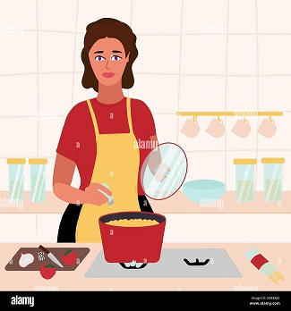
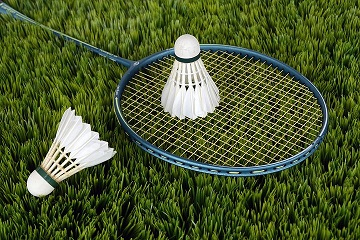
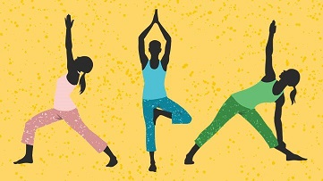

| Hobby |
Description |
Image |
| Cooking |
My favorite types of dishes to cook include pasta, vegetarian meals, and baked goods. There's something incredibly satisfying about preparing a delicious, homemade meal from scratch, and I love the creativity that goes into experimenting with new flavors and techniques. |
 |
| Badminton |
Welcome to my Badminton Hobby page! Badminton is one of my favorite sports, and I love the thrill of playing both recreationally and competitively.Whether I'm playing singles or doubles, I enjoy the fast-paced nature of badminton and the strategic thinking required to outsmart my opponent. It's a sport that requires a lot of hand-eye coordination, agility, and endurance, and I love the challenge of continually improving my skills and techniques. |
 |
| Yoga |
Whether I'm doing a gentle flow or a more intense power yoga class, I enjoy the challenge of stretching my body, building strength and flexibility, and finding calmness through deep breathing and meditation. Yoga is a practice that can benefit people of all ages and fitness levels, and there are endless opportunities for growth and exploration. |
 |